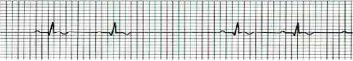
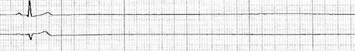
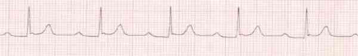
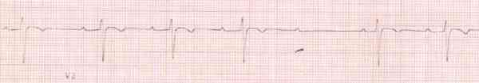
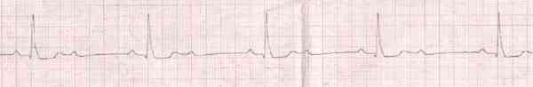

Bienvenue Sur Medical Education
Bradycardie
Spécialité : cardiologie /
Points importants
-
On parle de bradycardie lorsque la FC est < 60 bpm et de bradycardie relative lorsque la FC est anormalement lente selon des situations pathologiques (ex : FC = 60 bpm dans le cadre d'un choc hypovolémique,..)
-
La bradycardie peut être physiologique (athlètes...) ou secondaire
-
Toujours rechercher une étiologie curable (SCA, hyperkaliémie,...)
-
Toutes les bradycardies asymptomatiques ne doivent faire l'objet que d'une surveillance clinique et ECG
-
Toute instabilité hémodynamique (FC < 40 bpm, PAS < 100mmHg, OAP...) est une urgence thérapeutique et doit être orientée en USIC
Présentation clinique / CIMU
SIGNES FONCTIONNELS
-
Asthénie
-
Vertige / Syncope
-
Dyspnée d'effort et /ou de repos
-
Douleur thoracique
-
Ralentissement psychomoteur / Trouble de la conscience
-
Asymptomatique (découverte fortuite)
CONTEXTE
Présentation clinique / CIMU
SIGNES FONCTIONNELS
- Asthénie
- Vertige / Syncope
- Dyspnée d'effort et /ou de repos
- Douleur thoracique
- Ralentissement psychomoteur / Trouble de la conscience
- Asymptomatique (découverte fortuite)
CONTEXTE
Terrain
- Sujet âgé / sujet jeune et sportif
Traitement
- Médicaments bradycardisants (béta bloquant, amiodarone, inhibiteur calcique, digoxine,...)
- Médicaments hyperkaliémiants (aldostérone,...)
ATCD
- SCA, maladie de l'oreillette, troubles conductifs, endocardite
- Hypothyroïdie
- Anxiété avec hypertonie vagale
Circonstances de survenue
- Hypothermie
EXAMEN CLINIQUE
- FC < 60 bpm régulière ou irrégulière
- Pâleur, cyanose
-
± signes de bas débit cardiaque :
- dyspnée, OAP
- signes d'insuffisance cardiaque droite
- état de choc cardiogénique
- Trouble de la conscience secondaire à un bas débit cérébral
SIGNES PARACLINIQUES SIMPLES
ECG (12 dérivations et D2 long)
- Bradycardie sinusale = bradycardie régulière
-
Bloc Sino Auriculaire (BSA) :
- 1er degré : concept théorique n'ayant pas de traduction à l'ECG
-
2e degré : présence de pause auriculaire intermittente dont la durée est un multiple du cycle sinusal « PP » ; exemple : BSA 2/1 : 2 intervalles PP avant d'avoir une onde P suivie d'un QRS
-  _615 Bloc sino-auriculaire 2/1
-
3e degré : absence prolongée des auriculogrammes sinusaux pouvant conduire, si cela se prolonge, à un rythme d'échappement jonctionnel
-  _616 BSA du 3e degré sans échappement jonctionnel
-
BAV :
-
1er degré : allongement du PR > 0,20sec de façon constante ; absence de retentissement clinique
-  _617 Bloc auriculo-ventriculaire 1
-
2e degré :
-
Mobitz I ou Luciani-Wenckebach : allongement du progressif du PR aboutissant à une onde P bloquée (bloc nodal)
-  _618 BAV 2 Mobitz I
-
Mobitz II : onde P bloquée non suivie d'un QRS ; soit isolée, soit à intervalle régulier (2/1 ou 3/1...)
-  _619 Photo BAV 2 Mobitz II
-
Mobitz I ou Luciani-Wenckebach : allongement du progressif du PR aboutissant à une onde P bloquée (bloc nodal)
-
3e degré :
- indépendance complète des ondes P qui battent à leur rythme et des complexes QRS
- aucune onde P ne conduit un QRS
- présence d'un échappement ventriculaire dont la morphologie du QRS et sa fréquence traduisent le siège de la lésion (QRS fin : bloc supra ou intra hissien / QRS élargi : bloc infra hissien)
-
1er degré : allongement du PR > 0,20sec de façon constante ; absence de retentissement clinique
Diagnostic étiologique
Blocs aigus (± réversibles)
- Syndrome coronarien aigu
- Métabolique : hyperkaliémie+++
- Hypothyroïdie
- Intoxications médicamenteuses (anti-arythmiques+++, tricycliques, phénothiazines...)
- Maladies infectieuses (endocardite, myocardite, Diphtérie, maladie de Lyme,...)
- Stimulation vagale (anxiété, douleur, vomissement,...)
- Post chirurgie cardiaque
Blocs chroniques (le plus souvent irréversibles)
- Valvulopathie : rétrécissement aortique, insuffisance aortique
- Atteinte du myocarde : ischémie myocardique, cardiomyopathie dilatée...
- Congénital
- Maladie de Lenègre
- Divers : sarcoïdose, myopathie, tumeurs cardiaques...
Traitement
STABILISATION INITIALE
-
Scope, PA, SpO2, Température
-
2 voies veineuses périphériques de gros calibres
-
Remplissage si PAS < 100 mmHg par du NaCl 0,9%
SUIVI DU TRAITEMENT
Traitement étiologique
- Traitement du SCA
- Correction d'une hyperkaliémie
-
Selon la tolérance clinique :
- arrêt ou diminution des traitements anti-arythmiques
- mise en route des antidotes (glucagon dans les intoxications aux bêtabloquants...)
Traitement du trouble conductif
-
Bradycardie sinusale :
- si mauvaise tolérance clinique : atropine 0,5 mg en IVD à renouveler toutes les 3 à 5 min sans dépasser 3 mg
-
BSA :
- si BSA du 2e degré asymptomatique : simple surveillance
-
si BSA du 3e degré responsable d'une syncope prolongée :
- coups de poing sternaux à répéter jusqu'à mise en place de l'atropine
- si mauvaise tolérance clinique : Atropine 0,5 mg en IVD à renouveler toutes les 3 à 5 min sans dépasser 3 mg
- si absence d'amélioration et/ou persistance du trouble : EES externe
-
BAV :
- tous BAV (2e et 3e degrés) asymptomatiques ne nécessitent qu'une surveillance. La pose ultérieure d'un pacemaker sera discutée avec le cardiologue en fonction de la cause du trouble conductif
-
si BAV 2e ou 3e degré symptomatique avec état hemodynamique instable :
- coups de poing sternaux à répéter jusqu'à mise en place de l'atropine
- Atropine 0, 5 mg en IVD à renouveler toutes les 3 à 5 min sans dépasser 3 mg (utile seulement dans le BAV d'origine vagal)
- relais par Isuprel® [en l'absence de contre-indication (SCA...)] : 5 ampoules diluées dans 250 mL de G5% en IVSE : débit à adapter à la FC (en attendant la mise en place de l'EES)
- EES externe
Surveillance
-
Scope : ECG avec analyse de la fréquence ventriculaire, signe de souffrance ventriculaire
-
PA, SpO2, T°
-
Coloration cutanée, conscience
Devenir / orientation
CRITERES D'ADMISSION
Devenir / orientation
CRITERES D'ADMISSION
Si BSA3, BAV2 mobitz 2 ou BAV3
- Transfert en cardiologie
Si troubles conductifs symptomatiques avec état hémodynamique stable
- Orientation vers un service de cardiologie (rythmologie)
Si troubles conductifs avec état hémodynamique instable
- Orientation vers une USIC pour mise en place en urgence d'un stimulateur cardiaque endocavitaire
CRITERES DE SORTIE DU SAU
Troubles conductifs asymptomatiques
- Après élimination ou traitement d'une cause curable, retour au domicile avec rendez-vous en cardiologie pris si besoin
Bibliographie
-
Vardas PE, Auricchio A, Blanc JJ, Daubert JC, Drexler H and all. Guidelines for cardiac pacing and cardiac resynchronyzation therapy. European Heart Journal 2007
-
Jan F. Cardiologie. Masson 2e édition 2005
-
Carli P, Riou B, Télion C . Urgences médico chirurgicales de l'adulte 2e édition 2004
-
Torres JP, Lapostolle F. Troubles conductifs : stratégie diagnostique. Conférences Médecins, SFMU 2004
-
Da Costa D, Brady WJ, Edhouse J. ABC of clinical electrocardiography. Bradycardias ans atrioventricular conductions block. BMJ 2002 ; 324 :535-538
Auteur(s) : Romain DUFAU